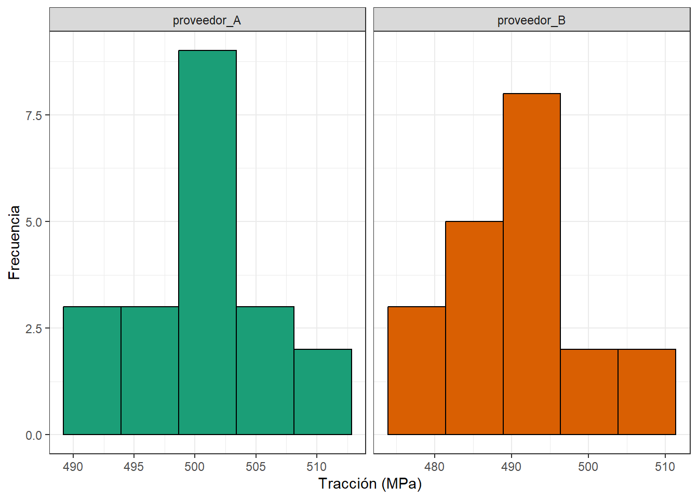
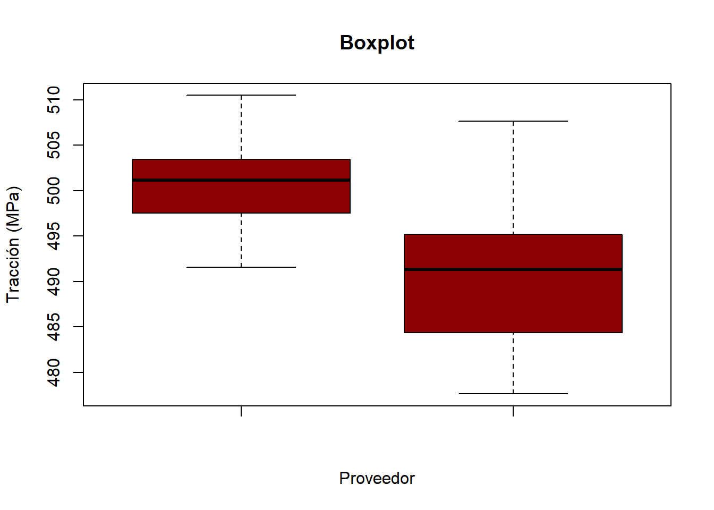

library(tidyverse)Solución: Ejercicio Integrador: Pruebas de hipótesis e intervalos de confianza
Librerías
Enunciado
Una empresa utiliza dos proveedores de materia prima (Acero Inoxidable 304) para un proceso de manufactura. Cada proveedor ha enviado 20 piezas para ser sometidas a una prueba de tracción (Mpa).
El suplidor que ofrezca mayor media será el seleccionado. Si ambos son estadísticamente iguales se decidirá por otras variables (como económicas, distancia, tiempos de entrega, etc).
Datos
proveedor_A <- c(501.9274, 495.0801, 501.021, 505.5986, 509.8922,
501.3304, 503.8653, 498.2751, 501.0132, 491.5641,
493.7679, 501.2815, 503.0563, 491.6516, 496.7806,
501.3209, 500.6065, 499.1927, 510.4843, 504.5014)
proveedor_B <- c(505.243, 495.27, 494.9515, 488.8753, 495.1143,
497.0515, 491.1054, 477.6504, 493.4068, 478.8903,
488.6042, 484.9166, 488.9433, 497.9492, 483.8777,
491.5368, 507.64, 480.591, 491.6382, 483.3232)¿Puedo usar Prueba de hipótesis e IC?
Para usarlo en el caso de la media debo cumplir al menos, uno de dos requisitos:
Que la población sea una normal
Que el tamaño de muestra sea suficiente para cumplir el TLC.
Comprobemos si nuestros datos se parecen a la normal
data.frame(proveedor_A, proveedor_B) %>%
tidyr::pivot_longer(1:2,
names_to = "Proveedor",
values_to = "Valores") %>%
ggplot2::ggplot(aes(Valores, fill = Proveedor)) +
geom_histogram(bins = 5, color = "black") +
labs(x = "Tracción (MPa)",
y = "Frecuencia") +
scale_fill_brewer(palette = "Dark2") +
facet_grid(~Proveedor, scales = "free_x") +
theme_bw() +
theme(legend.position = "none")
Aproximadamente, con base en la forma del histograma y tomando en cuenta la cantidad de datos, se puede decir que si provienen de una distribución normal.
Gráfico de cajas y bigotes
Con el gráfico podemos concluir dos cosas:
Parece que la media si es diferente (Pero nos falta una prueba de hipótesis)
Parece que las varianzas no son iguales, nótese en los RIC (Pero también nos falta una prueba de hipótesis).
boxplot(proveedor_A, proveedor_B,
col = "darkred",
main = "Boxplot",
xlab = "Proveedor",
ylab = "Tracción (MPa)")
Prueba de igualdad de varianzas
Se confirma la sospecha que ambas varianzas no son iguales. Note que esto es consecuencia del valor de \(\alpha\) seleccionado (0.07). Cambie este valor y observe.
var.test(x = proveedor_A,
y = proveedor_B,
ratio = 1,
conf.level = 0.93)
F test to compare two variances
data: proveedor_A and proveedor_B
F = 0.41574, num df = 19, denom df = 19, p-value = 0.06299
alternative hypothesis: true ratio of variances is not equal to 1
93 percent confidence interval:
0.1768587 0.9772559
sample estimates:
ratio of variances
0.4157358 Prueba de 2 medias
Según esta prueba las medias son diferentes, por lo que resulta en la elección del proveedor A.
t.test(x = proveedor_A,
y = proveedor_B,
mu = 0,
var.equal = FALSE, # resultado de la prueba anterior
conf.level = 0.93)
Welch Two Sample t-test
data: proveedor_A and proveedor_B
t = 4.5962, df = 32.47, p-value = 6.223e-05
alternative hypothesis: true difference in means is not equal to 0
93 percent confidence interval:
5.794059 13.769181
sample estimates:
mean of x mean of y
500.6106 490.8289